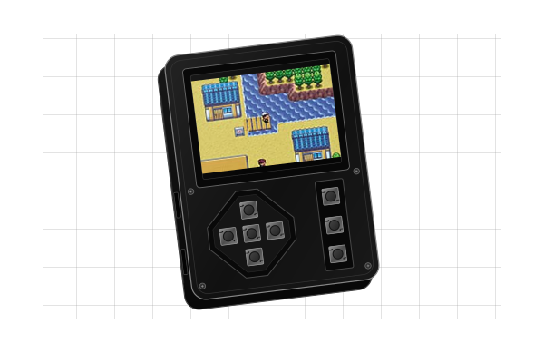
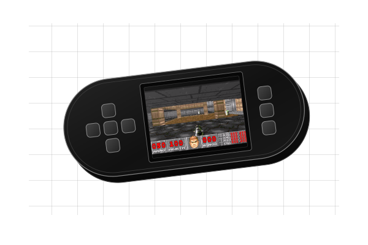
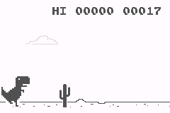
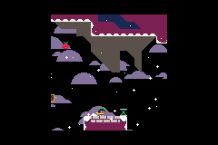
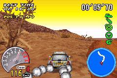

Play.
Your chosen GBA game starts when the device turns on. Your game file stays local.
Your game. Your image.ONE DEVICE. TWO WAYS IN.
Build a flashable SD card image with your own Game Boy Advance game. Start with a game, then switch into SeedSigner on the same device.

Choose the profile that matches your Pi Zero 1.3 and display.
.gba or .zip · 32 MiB game limit · 40 MiB ZIP limit
Controls are selected after your game is checked.
GBA games only. No L/R shoulder controls, game audio or persistent game saves. Compatibility varies.
Loading builder…
BUILT & CHECKSUMMED
Next: write the IMG to your SD card using Raspberry Pi Imager.
ONE DEVICE. TWO EXPERIENCES.
Your chosen GBA game starts when the device turns on. Your game file stays local.
Your game. Your image.Keep the game and SeedSigner on one SD card. Open SeedSigner when you need it.
One device. One SD card.Scan a transaction, review it on the device and sign with SeedSigner.
The familiar SeedSigner interface.START WITH WHAT YOU HAVE
Two display sizes. Plus and Play share the larger profile. Supported board: Raspberry Pi Zero 1.3.

Uses the 320 × 240 Plus profile conditionally. Confirm Pi Zero 1.3 and a matching display/HAT; the maker does not specify every internal part.
Maker’s device details
A larger display. For the 320 × 240 ST7789 Plus HAT on Pi Zero 1.3.
Maker’s device details
The classic square display. For the 240 × 240 Waveshare 1.3-inch HAT on Pi Zero 1.3.
Reference hardware guideIllustrated hardware with example game screens; proportions are approximate, not to exact scale. Community beta: physical testing is pending for every profile. Illustration references & credits ↗
YOUR GAME, YOUR CHOICE
Use your own GBA game file. These examples are not bundled. Pick games that work with a D-pad, A, B, Start and Select.


PLATFORMER
Move, jump and grapple through a compact platformer. Uses D-pad, A, B and Select.
Get the GBA port
RACING
Racing with a dedicated control preset, selected automatically for V-Rally 3.
Use your own game filePrefer something quieter? 2048 Advance is another control fit to try, using D-pad, Start and Select.
Explore 2048 AdvanceCaptured game frames. These examples have not been physically validated with this builder; compatibility and speed vary.
FROM DOWNLOAD TO DEVICE
Your browser makes the file. Raspberry Pi Imager writes it to your SD card.
Build with your chosen device and game. Save the IMG and its checksum file. Use a current desktop browser for the build.
In Raspberry Pi Imager, choose Use custom, select your IMG and write it to the correct SD card. Writing erases that card. Let verification finish.
Insert the card and power on. To open SeedSigner, hold KEY1 + KEY3—the outer action buttons—for 2 seconds, then release all buttons. Reboot to return to the game.
A FEW IMPORTANT DETAILS
This version accepts Game Boy Advance files (.gba), or a ZIP containing exactly one .gba file. The game can be up to 32 MiB; the ZIP can be up to 40 MiB. Other consoles and multi-game ZIPs are not supported.
The builder checks the GBA header and file integrity. Emulator compatibility and speed vary by game. Passing those checks does not mean the game has been played on your hardware.
Standard GBA provides D-pad, A, B, Start and Select. There are no L/R shoulder controls, game audio or persistent game saves. Choose games that do not need those features.
V-Rally 3 has a dedicated racing preset and is detected automatically. The controls section in the builder shows the current mapping.
The SeedSigner shortcut is fixed in this builder: hold KEY1 + KEY3 for two seconds, then release all buttons.
The image targets Pi Zero 1.3. Plus uses a 320 × 240 ST7789 profile; regular uses the 240 × 240 Waveshare HAT profile. Play uses the Plus profile conditionally: verify its board, display and HAT match before flashing. A product photo cannot establish internal compatibility.
The new images still need physical cold-boot, display, button, camera and signing validation. Read the validation record for the current checks and remaining gaps.
No. The ROM is read and added to the image in browser memory. The site downloads its public template, but never uploads your game. There are no accounts, analytics or third-party scripts.
GitHub Pages hosts the site and receives normal requests for its files, including connection information that GitHub may log. Local ROM processing does not make visiting the site anonymous.
No. This is an independent community fork, not an official or endorsed SeedSigner, BitKit or Strike product. It has not had an independent security audit.
The game and SeedSigner share one operating system. The button combination is a way to enter the interface, not authentication or a security boundary. Start validation with disposable test seeds. Never enter a seed into this website.
Never enter a seed into this website. Verify experimental software before using it with real funds.